Home
Veranstaltung in Wöllstein:
Geometrie als Kunst, Wissen und Kraft,
mit Kurt Moritz und Bernhard Wimmer
12.08.- 13.08.2023 55597 Wöllstein, Ziegelhüttenstr. 14
Kurt Moritz
Über Verdichtungs-Wege und den kristallinen Weltenaufbau
|
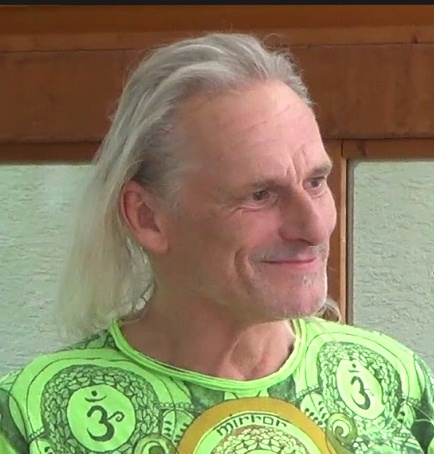
Er kommt aus der Schweiz in der Nähe von Basel.
|
Kurt Moritz ist Künstler und stellt hier einen Teil seiner Arbeit vor. Er hat sich visionär mit den spiraligen Bewegungen beschäftigt,
die zur Verdichtung von Geist und Seele, hinein in die körperliche 3D-Welt, ablaufen müssten.
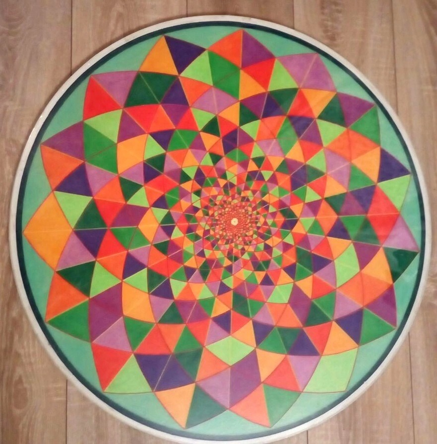
|
Teil 1 - Kristalliner Weltenaufbau
https://www.youtube.com/watch?v=wE0msZHzru0
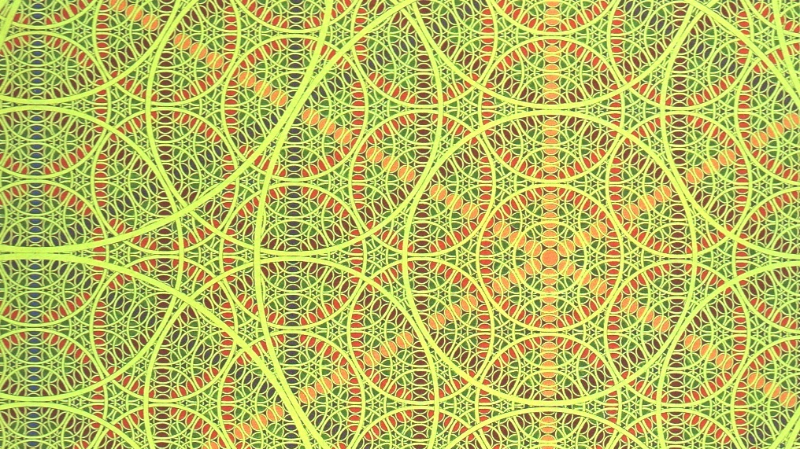
Download Teil 1 Kurt Moritz
Teil 2 - Verdichtungs-Wege
https://www.youtube.com/watch?v=69CJpujb10o
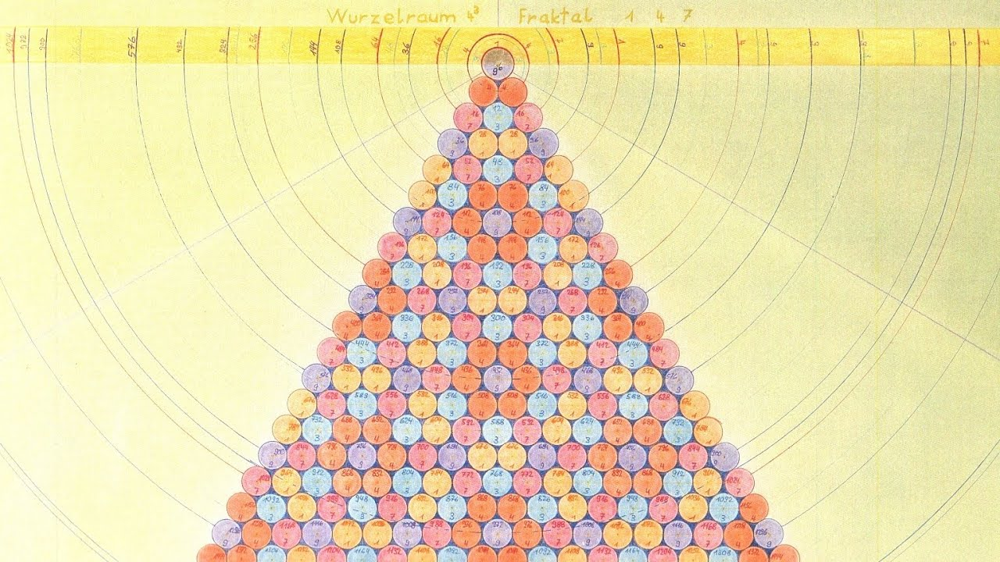
Bild grösser
Download Teil 2 Kurt Moritz
Sein Vorgehen zum Erzeugen des LoveJet: Vom quadrierten Strahlabstand zum Zentrum Mitte-Oben wird die Quersumme gebildet und das Ergebnis in Farben kodiert. Es ergeben sich Muster in kreisförmiger Anordnung, aber die Achsen der Kreise stehen senkrecht zum Strahlabstand. An Positionen, wo an Lebewesen Chakren gesehen werden.
Teil 3 - LoveJet (Vertiefung von Teil 2)
https://www.youtube.com/watch?v=Ui6IbnbPpRI
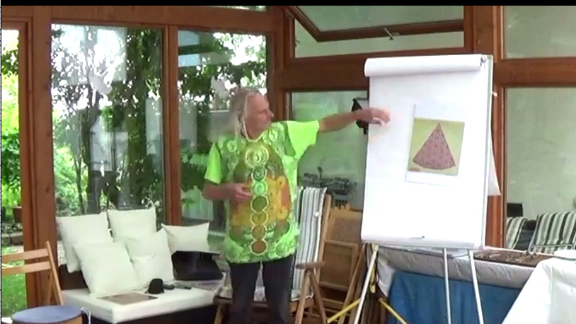
Download Teil 3 Kurt Moritz
Wirbel-Aura-Interpretation von Gabi Müller:
Alles klar rechnerisch nachvollziehbar, aber wie interpretiert man das Bilden der Quersumme, die ja eine modulo(9)-Rechnung ist? Sind es wirklich nur Abstände oder eher strömende Perlenketten mit äquidistant aufgefädelten Teilchen (in der Kernphase)? Stammt ihre Anzahl von einer Fläche, die sie vorher dicht ausfüllten (Hüllenphase)? Und gingen bei der kompressierenden Schnurbildung alle Neunergruppen (aus Anu?) "verloren"? Nur der mod9-Rest blieb als Subwirbel-Qualität übrig? Wurden sie als Elektronen in die nächstbeste Hülle emittiert, die elektrische Aura?
Die Kurt-Moritz-Geometrie
Weitere Bilder und Kommentare von Gabi Müller
Kurt Moritz Kontakt: Kurt.Moritz@2hn.de
|
Bernhard Wimmer - Das GoldeneSchnitt SRI YANTRA
|
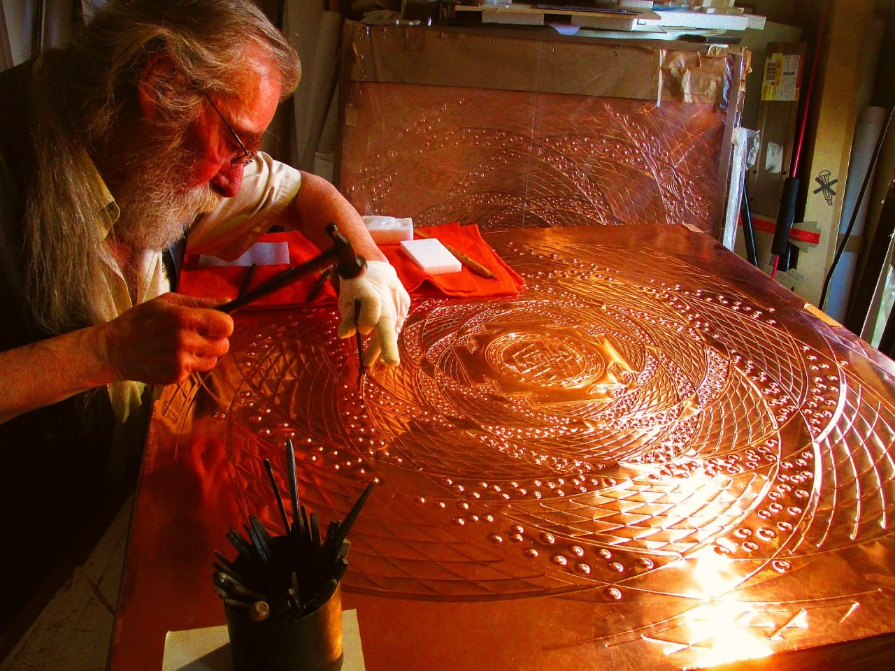
|
Bernhard Wimmer ist Bildhauer, Künstler, Philosoph und Forscher.
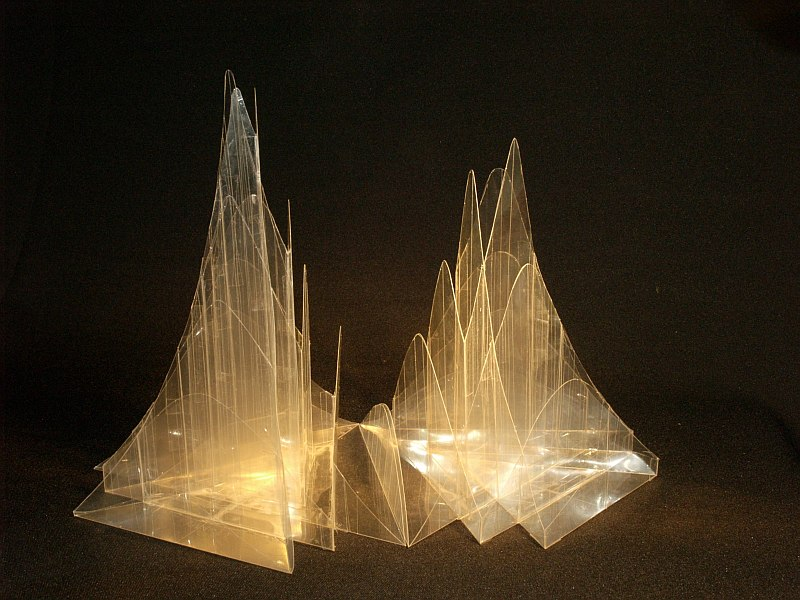
|
In seinem dreiteiligen Vortrag geht es um das GoldeneSchnitt SRI YANTRA im Lichte der Neuen Kosmologie & AstroPhysik.
Eine AbenteuerReise durch die Neue AstroPhysik & Kosmologie bestätigt die Gültigkeit der seit Alters her überlieferten Aussage:
Das SRI YANTRA ist eine vollständige Repräsentation des Universums und ein akkurates Bild für einen Menschen.
Bernhard Wimmer nimmt uns (...den Zuhörer …) mit auf seine Forschungsreise zum SRI YANTRA als metaPHYSISCHes und als
metaPHYSIKALISCHes Werkzeug (yantra) aus der indisch-vedischen Kultur-Tradition.
|
Teil 1 - Vorstellung und Einführung in das Große Bild
https://www.youtube.com/watch?v=tTg4Y7Wq6dE
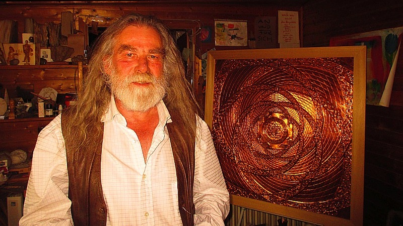
Download Teil 1 Bernhard Wimmer
Teil 2 - Eine kosmische Reise und ihre unterschiedlichen Deutungen & Bedeutungen für unser Leben
https://www.youtube.com/watch?v=66rKvLoUVzg
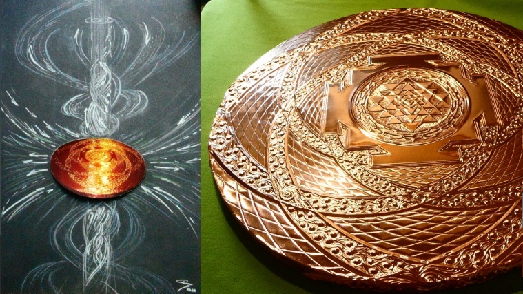
SRI YANTRA grösser
Download Teil 2 Bernhard Wimmer
Teil 3 - Erkenntnisse aus der kosmischen Reise und Beispiele für das praktische Arbeiten mit diesem „Heiligen“ Werkzeug (YANTRA)
https://www.youtube.com/watch?v=pHLvgikJetU
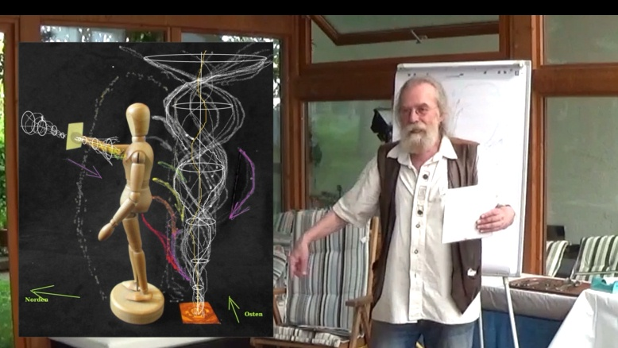
Download Teil 3 Bernhard Wimmer
Webseite Bernhard Wimmer: www.bernhardwimmer.com
Kontakt: info@bernhardwimmer.com
|
|
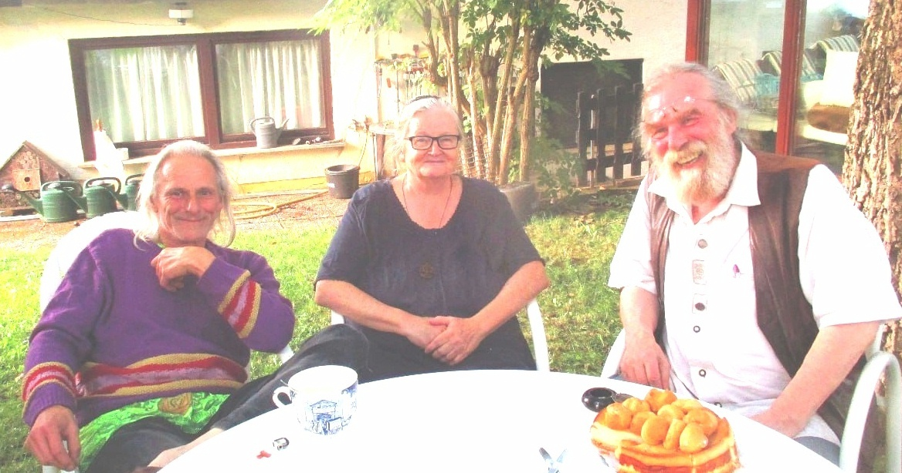
Verein Perlenschnur e.V.
Vorstand: Ingrid Schröder und Dipl.-Phys. Gabi Müller
Sitz: D - 55597 Wöllstein, Ziegelhüttenstr. 14
Telefon Ingrid Schröder 0049 (0) 6703 2965
E-Mail: office@perlenschnur.org
|
Hier eintragen in den Newsletter von perlenschnur.org und viva-vortex.de
Home
| Termine
| Videos
| Links
| Impressum
| Datenschutz
|